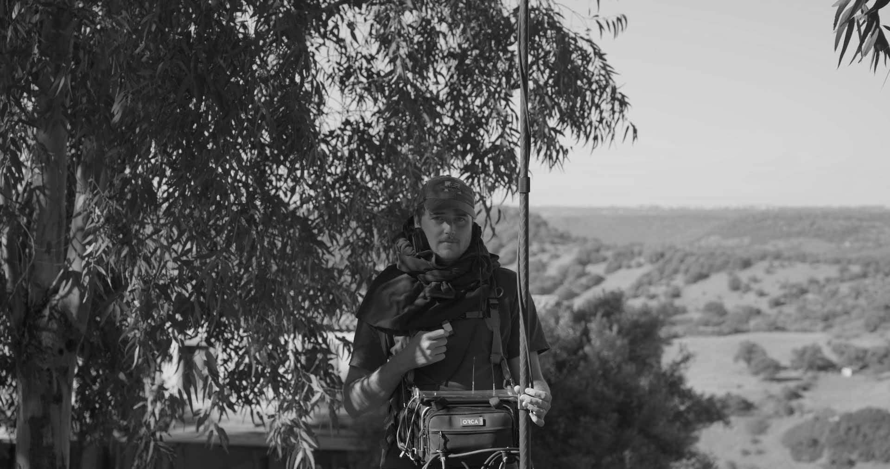
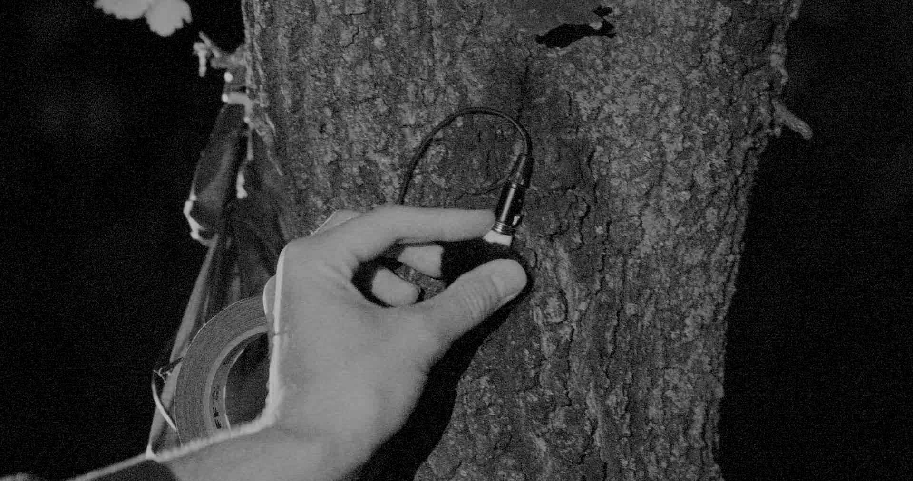
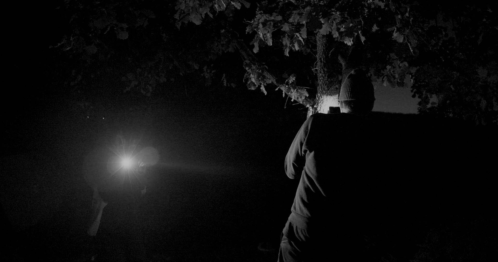
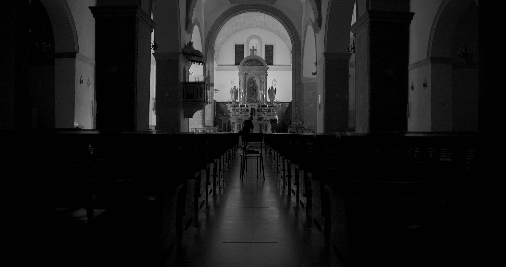
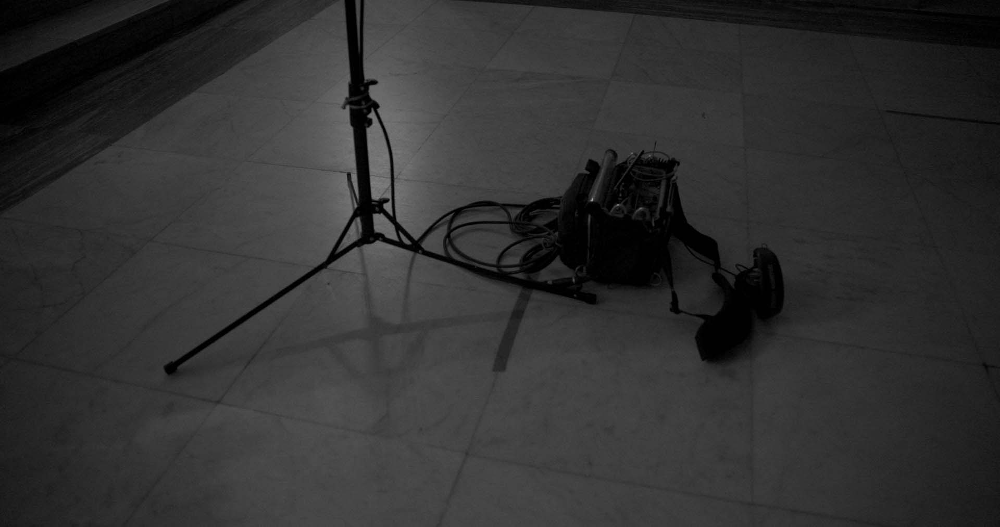
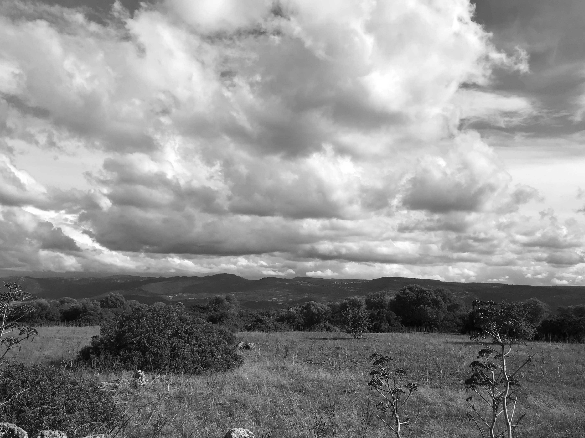
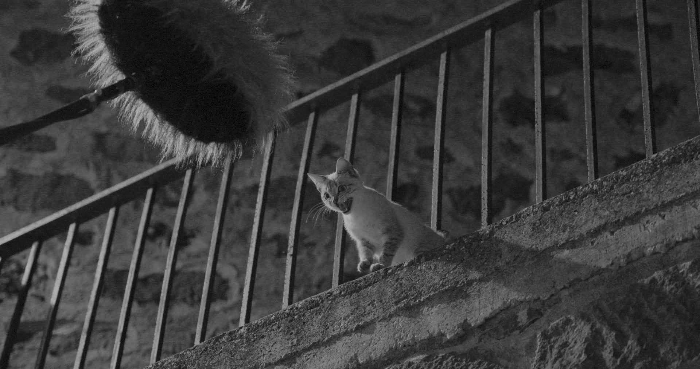
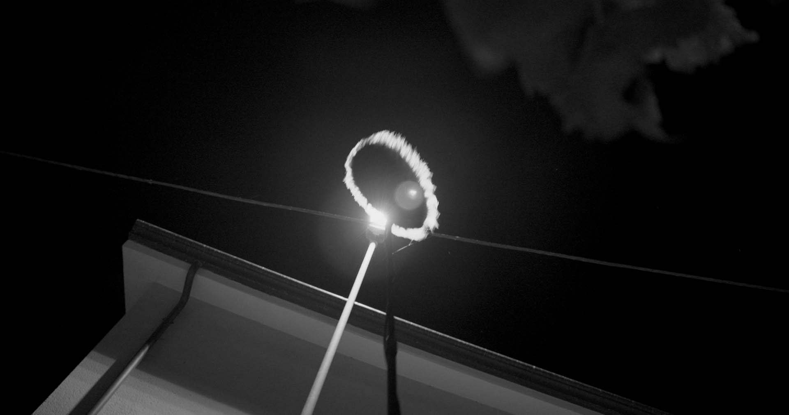

Originally from Halifax, Canada, now based in Montreal, Canada, is a sound artist primarily working in documentary and experimental film. Alex is passionate about field recording which he incorporates into his film work as well as his personal archival practice. He approaches sound for film as a highly collaborative and unified creative position, in constant dialogue with image–building depth through contrasting the visual and aural. He strives to work on projects that are complementary to this approach and use sound as an active storytelling device.
Alex Lane è un sound artist canadese. Attualmente residente a Montréal (Canada), lavora principalmente a documentari e film sperimentali. Alex è appassionato di field recording, che utilizza sia nel lavoro cinematografico che nella sua pratica artistica personale. Approccia il film sound in modo altamente creativo e collaborativo, in costante dialogo con l’immagine, attraverso il contrasto tra il visivo e l’acustico. Predilige la partecipazione a progetti in linea con questo approccio, dove il suono diventa dispositivo narrativo.
Alex with his recording equipment near the Santu Antine church
 Placing a microphone on a tree to leave overnight
 Recording the choir at the San Giovanni Battista church
  Recording in the streets of Sedilo

Screening: Sunday 02.10.2022, 20H30
Sa Prima Ighina - Via Efisio Marini, 21, Sedilo
Programme:
Goodnight Goodnight
Canada | 2020 | 37min | Directed by Mackenzie Reid Rostad
Sound by Alex Lane
The Hollow
USA | 2022 | 14min | Directed by Jean-Jacques Martinod & Bretta C. Walker
Sound by Alex Lane
La Bala de Sandoval
Ecuador | 2019 | 18min | Directed by Jean-Jacques Martinod
Sound by Alex Lane